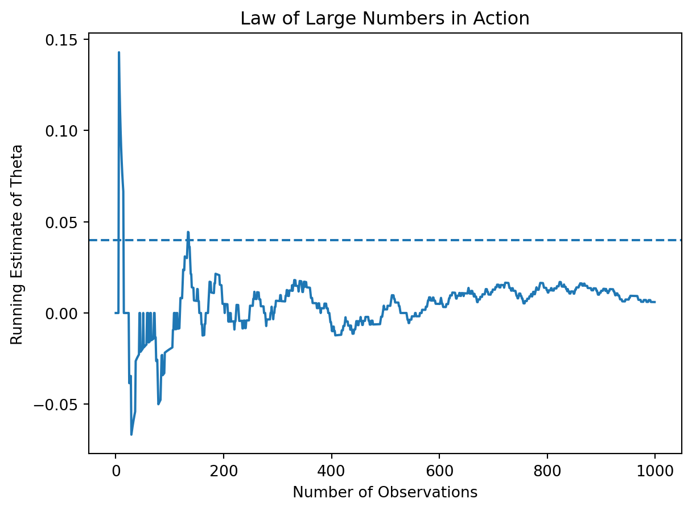
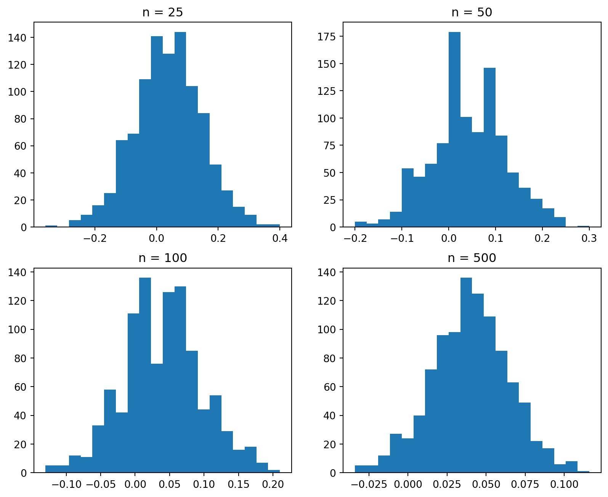

import numpy as np
np.random.seed(123)
A = np.random.binomial(1, 0.22, 1000)
B = np.random.binomial(1, 0.18, 1000)A/B Testing a Call to Action
Simulating Key Ideas from Classical Frequentist Statistics
Introduction
I run a website where visitors can subscribe to a newsletter on the homepage. I want to increase the number of sign-ups, so I am considering changing the wording of the call to action (CTA).
I create two different versions of the CTA. One says “Sign up for our newsletter here!”, and the other says “Join us to stay updated!”. Although the difference is small, the wording may influence whether users decide to subscribe.
To determine which version performs better, I run an A/B test. In an A/B test, visitors are randomly assigned to one of the two versions, so that each group is comparable and not biased by user characteristics. I then compare the sign-up rates between the two groups to see which CTA leads to more conversions. This allows me to make a data-driven decision instead of relying on guesswork.
The A/B Test as a Statistical Problem
Each visitor either signs up or does not, so the outcome can be represented as a binary variable. This naturally leads to a Bernoulli model.
Let \(\pi_A\) denote the probability of signing up under CTA A, and \(\pi_B\) denote the probability under CTA B. The parameter of interest is:
\[ \theta = \pi_A - \pi_B \]
Since the true probabilities are unknown, we estimate them using sample means:
\[ \hat{\theta} = \bar{X}_A - \bar{X}_B \]
This quantity represents the observed difference in proportions between the two groups.
Simulating Data
To better understand how the estimator behaves, I simulate data in a setting where the true probabilities are known:
\[ \pi_A = 0.22, \quad \pi_B = 0.18 \]
so that
\[ \theta = \pi_A - \pi_B = 0.04 \]
This controlled setup allows us to evaluate how well our statistical procedures recover the true effect.
Here, each observation is drawn from a Bernoulli distribution, where a value of 1 represents a successful sign-up and 0 represents no sign-up. The sample size of 1,000 per group ensures that we have enough data to observe the behavior of the estimator while still retaining randomness.
By working in a setting where the true value is known, we can directly assess whether the estimators and inference procedures introduced later are able to accurately recover that value.
The Law of Large Numbers
The Law of Large Numbers implies that as the sample size increases, the estimator \(\hat\theta = \bar{X}_A - \bar{X}_B\) will converge to the true value.
diff = A - B
cum_avg = np.cumsum(diff) / np.arange(1, len(diff)+1)
The figure tracks the running estimate of \(\hat{\theta}\) as the sample size grows. At small sample sizes, the estimate fluctuates substantially, reflecting the randomness inherent in limited data. As more observations are incorporated, these fluctuations diminish and the estimate stabilizes near the true value.
This visualization is important because it demonstrates not just convergence, but also the practical implication: reliable conclusions require sufficiently large samples.
Bootstrap Standard Errors
While \(\hat{\theta}\) provides a point estimate, it does not indicate how precise that estimate is. To assess reliability, we need to measure how much it would vary across repeated samples.
Bootstrap resampling offers a practical way to approximate this variability. Instead of relying solely on theoretical formulas, it constructs an empirical sampling distribution by repeatedly resampling from the observed data.
For each resample, we compute: \(\hat\theta^* = \bar{X}_A^* - \bar{X}_B^*\)
boot_theta = []
for _ in range(1000):
A_star = np.random.choice(A, size=1000, replace=True)
B_star = np.random.choice(B, size=1000, replace=True)
theta_star = np.mean(A_star) - np.mean(B_star)
boot_theta.append(theta_star)
boot_theta = np.array(boot_theta)
boot_se = np.std(boot_theta)This procedure produces many bootstrap estimates \(\hat{\theta}^*\), which approximate the sampling distribution of \(\hat{\theta}\). The standard deviation of these values provides an estimate of the standard error.
The analytical standard error is given by: \[ SE(\hat\theta) = \sqrt{\frac{\hat\pi_A(1 - \hat\pi_A)}{n_A} + \frac{\hat\pi_B(1 - \hat\pi_B)}{n_B}} \]
Bootstrap SE: 0.0179
Analytical SE: 0.018The two estimates are nearly identical. This agreement is meaningful: it shows that a simulation-based approach can recover the same uncertainty measure as a theoretical derivation. In practice, this is valuable because bootstrap methods remain applicable even when analytical formulas are difficult to derive.
The Central Limit Theorem
While the Law of Large Numbers explains convergence, the Central Limit Theorem describes the shape of the sampling distribution. The sampling distribution of \(\hat\theta = \bar{X}_A - \bar{X}_B\) approaches a Normal distribution as the sample size increases.

The figure displays the distribution of \(\hat{\theta}\) for increasing sample sizes. When the sample size is small, the distribution appears irregular and skewed. As the sample size grows, it becomes smoother and more symmetric, approaching a bell-shaped curve.
This pattern is important because it justifies the use of Normal approximations in inference. Even when the underlying data are not Normal, the estimator itself behaves approximately normally in large samples.
Hypothesis Testing
Having established both the estimate and its variability, we can formally test whether the observed difference is statistically meaningful.
We test:
\(H_0: \theta = 0\) \(H_1: \theta \neq 0\)
The test statistic is: \[ z = \frac{\hat\theta - 0}{SE(\hat\theta)} \]
from scipy.stats import norm
theta_hat = np.mean(A) - np.mean(B)
z = theta_hat / analytical_se
p_value = 2*(1 - norm.cdf(abs(z)))
print("z-stat:", round(z,4))
print("p-value:", round(p_value,4))z-stat: 0.3329
p-value: 0.7392The p-value represents the probability of observing a difference at least as extreme as the one obtained, assuming the null hypothesis is true. In this case, the p-value is relatively large, indicating that the observed difference can plausibly be attributed to random variation rather than a true effect.
The T-Test as a Regression
The same comparison can be expressed as a regression: \[ Y_i = \beta_0 + \beta_1 D_i + \varepsilon_i \]
where \(\beta_1 = \pi_A - \pi_B = \theta\)
import pandas as pd
import statsmodels.api as sm
Y = np.concatenate([A, B])
D = np.concatenate([np.ones(len(A)), np.zeros(len(B))])
X = sm.add_constant(D)
model = sm.OLS(Y, X).fit()
model.summary()| Dep. Variable: | y | R-squared: | 0.000 |
|---|---|---|---|
| Model: | OLS | Adj. R-squared: | -0.000 |
| Method: | Least Squares | F-statistic: | 0.1107 |
| Date: | Wed, 22 Apr 2026 | Prob (F-statistic): | 0.739 |
| Time: | 22:26:36 | Log-Likelihood: | -1020.0 |
| No. Observations: | 2000 | AIC: | 2044. |
| Df Residuals: | 1998 | BIC: | 2055. |
| Df Model: | 1 | ||
| Covariance Type: | nonrobust |
| coef | std err | t | P>|t| | [0.025 | 0.975] | |
|---|---|---|---|---|---|---|
| const | 0.2010 | 0.013 | 15.766 | 0.000 | 0.176 | 0.226 |
| x1 | 0.0060 | 0.018 | 0.333 | 0.739 | -0.029 | 0.041 |
| Omnibus: | 411.678 | Durbin-Watson: | 1.995 |
|---|---|---|---|
| Prob(Omnibus): | 0.000 | Jarque-Bera (JB): | 721.381 |
| Skew: | 1.469 | Prob(JB): | 2.26e-157 |
| Kurtosis: | 3.158 | Cond. No. | 2.62 |
Notes:
[1] Standard Errors assume that the covariance matrix of the errors is correctly specified.
The regression output provides an alternative way to interpret the A/B test results. In this model, the coefficient on the treatment indicator (\(x1\)) represents the difference in average outcomes between the two groups.
Specifically, the estimated coefficient is 0.0060, which matches the previously computed \(\hat{\theta}\). This confirms that the regression framework is equivalent to the difference-in-means approach.
The associated p-value (0.739) is large, indicating that the estimated difference is not statistically significant. In addition, the 95% confidence interval for the coefficient includes zero, further suggesting that the observed effect may be due to random variation rather than a true underlying difference.
Overall, the regression results reinforce the earlier conclusion: there is no strong evidence that the two CTA versions perform differently.
The Problem with Peeking
In practice, experiments are not always conducted as cleanly as theory assumes. Suppose that instead of waiting until all 1,000 observations per group are collected, results are evaluated repeatedly during the experiment. For example, we may check for statistical significance after every 100 observations, and stop early if a significant result is found.
At first glance, this may seem reasonable. However, under classical frequentist statistics, this practice introduces a serious problem. A single hypothesis test conducted at the \(\alpha = 0.05\) level has a 5% probability of producing a false positive when the null hypothesis is true. But when multiple tests are performed on the same accumulating data, each additional “peek” creates another opportunity to falsely reject the null hypothesis. As a result, the overall Type I error rate is no longer controlled at 5%.
To illustrate this, I simulate a setting in which the null hypothesis is true, so that there is no real difference between the two groups:
count = 0
for _ in range(10000):
A_sim = np.random.binomial(1, 0.20, 1000)
B_sim = np.random.binomial(1, 0.20, 1000)
for i in range(100, 1001, 100):
theta_hat = np.mean(A_sim[:i]) - np.mean(B_sim[:i])
se = np.sqrt((0.2*0.8)/i + (0.2*0.8)/i)
z = theta_hat / se
p = 2*(1 - norm.cdf(abs(z)))
if p < 0.05:
count += 1
break
print("False positive rate:", count / 10000)False positive rate: 0.1823False positive rate: 0.1823
The simulated false positive rate is substantially higher than the nominal 5% level. This occurs because repeatedly checking results during data collection introduces multiple opportunities to incorrectly reject the null hypothesis.
This result highlights an important practical issue: even when statistical methods are correctly applied, improper experimental procedures—such as peeking—can lead to misleading conclusions.
Conclusion
This analysis illustrates how A/B testing is grounded in fundamental statistical principles, including the Law of Large Numbers, bootstrap methods, and the Central Limit Theorem.
More importantly, it demonstrates that careful interpretation is essential. Reliable conclusions depend not only on correct statistical tools, but also on proper experimental design. Without this, even well-executed analyses may produce results that appear meaningful but are ultimately driven by randomness.